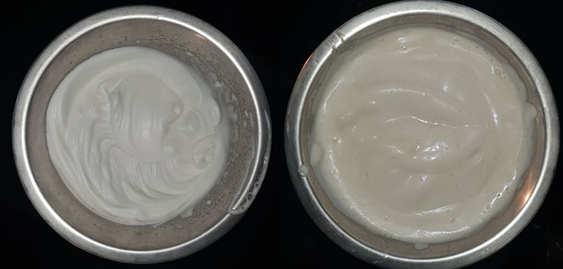
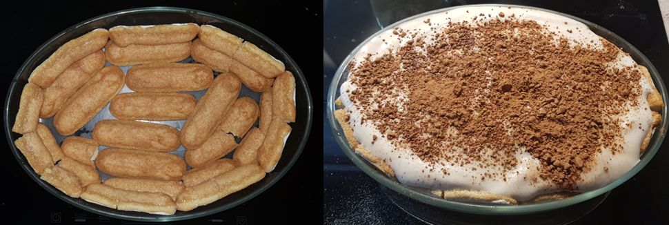

Tiramisu Veggy
Le tiramisu c'est quand même la base pour montrer qu'on peut être vegan et se faire plaisir... 
Ingrédients pour un tiramisu de 6 personnes :¶

- 400gr de tofu soyeux
- 200gr de tofu ferme (de bonne qualité et qui ne s'émiette pas)
- 50ml de jus de pois chiche
- Boudoirs veggies
Warning
J'ai pas encore trouvé de boudoirs veggies, mais il y a toujours possibilité de réaliser un biscuit vegan
- 125 ml de café très fort
- cacao noir en poudre pour patisserie
- extrait d'amande amer
- deux grosses cuillères de d'huile de coco
Question
A essayer : Pur lait de coco ? L'important est de trouver quelque chose qui fige en dessous de 18-20°C pour maintenir le Tiramisu ferme
- sucre (éviter le sirop d'agave qui a tendance à rendre la crème finale liquide)
Préparation :¶
La crème :¶
- Verser le jus de pois chiche dans un bol et le faire monter en neige (batteur indispensable)
- Dans un autre bol battre modérément le tofu soyeux, le tofu ferme et l'huile de coco
- Ajouter le sucre, l'extrait d'amande amer
- Incorporer délicatement les blanc 
finale :¶
- Tremper les boudoirs dans le café et tapisser un fond de plat et les bords
- Verser la crème
- soupoudrer le dessus avec le cacao
- laisser reposer 12H au frigo 
A déguster frais !